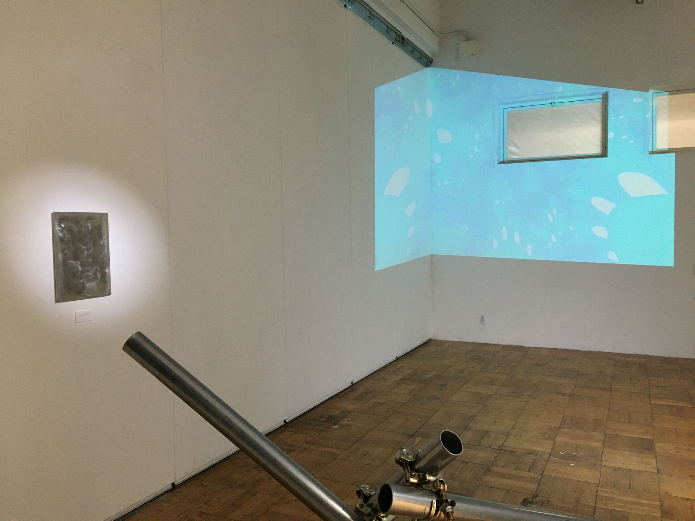
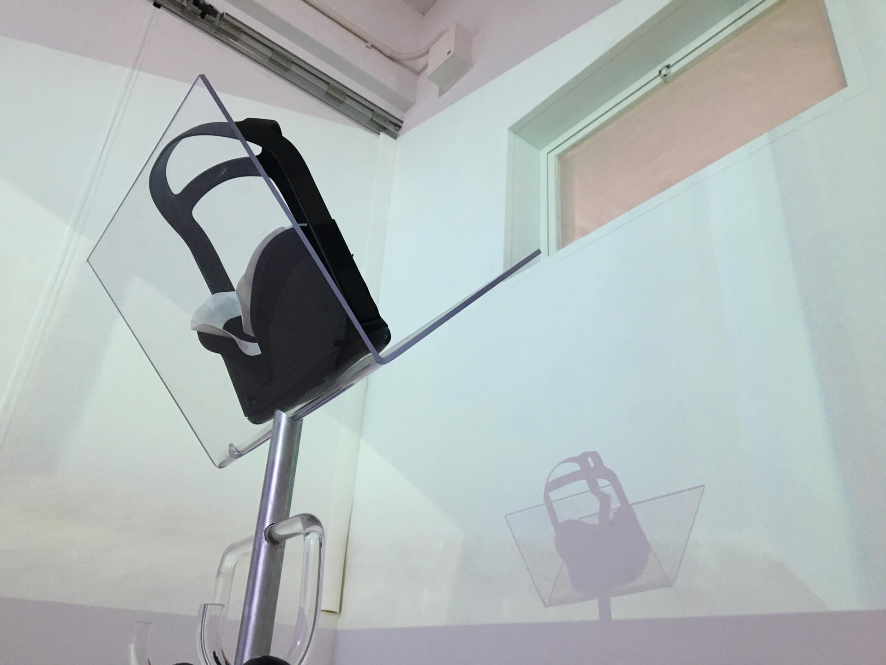
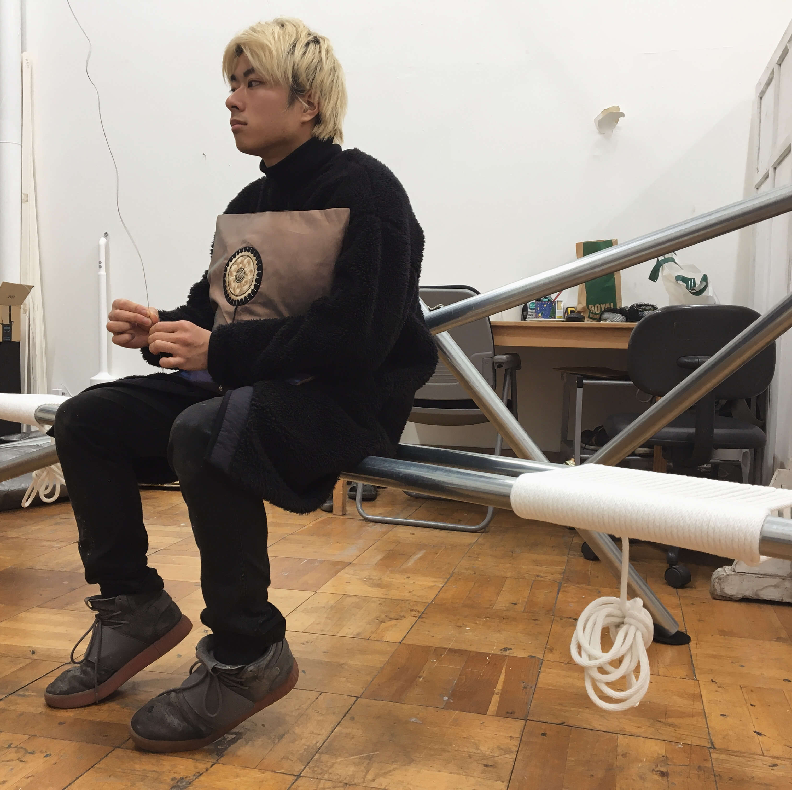
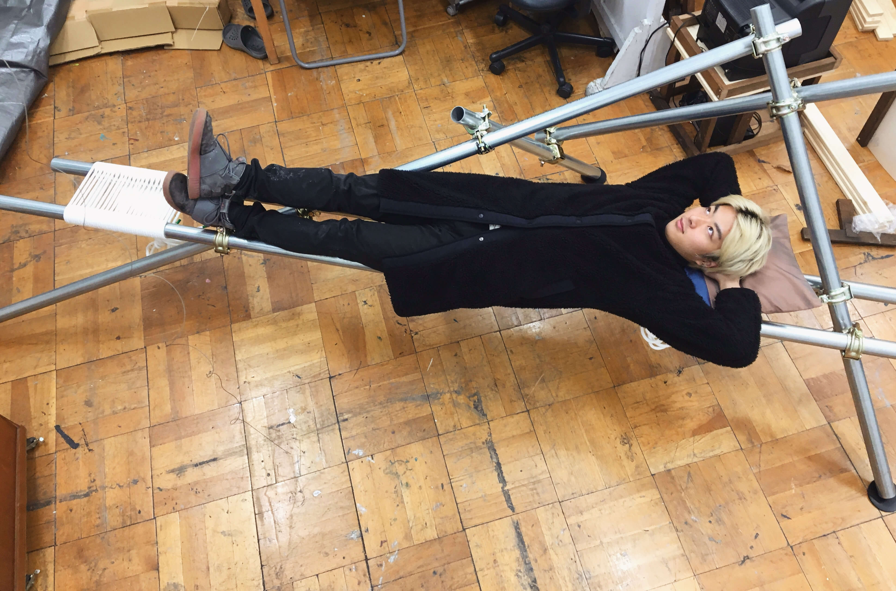
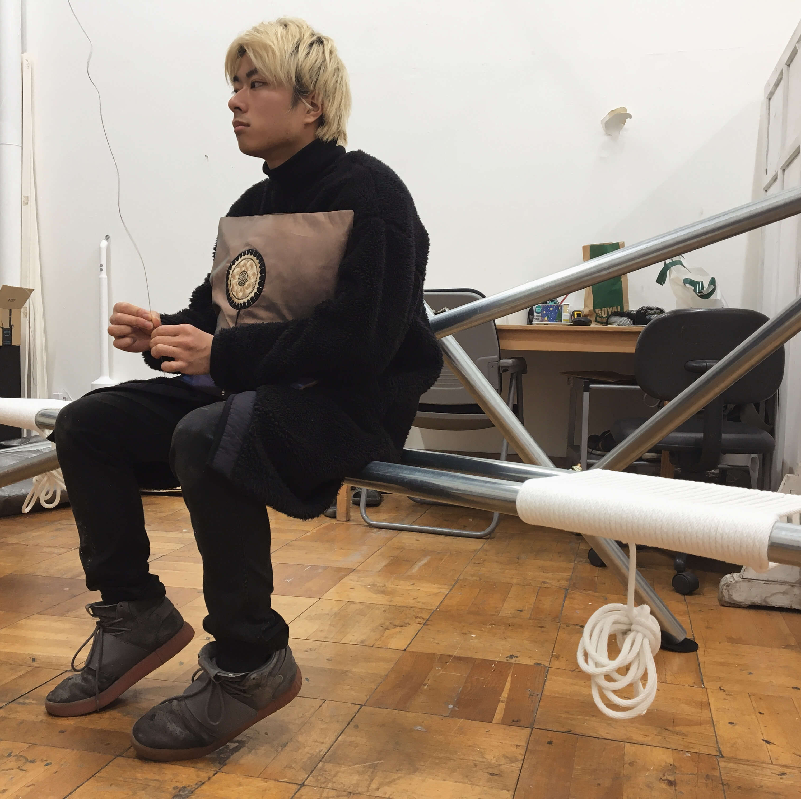
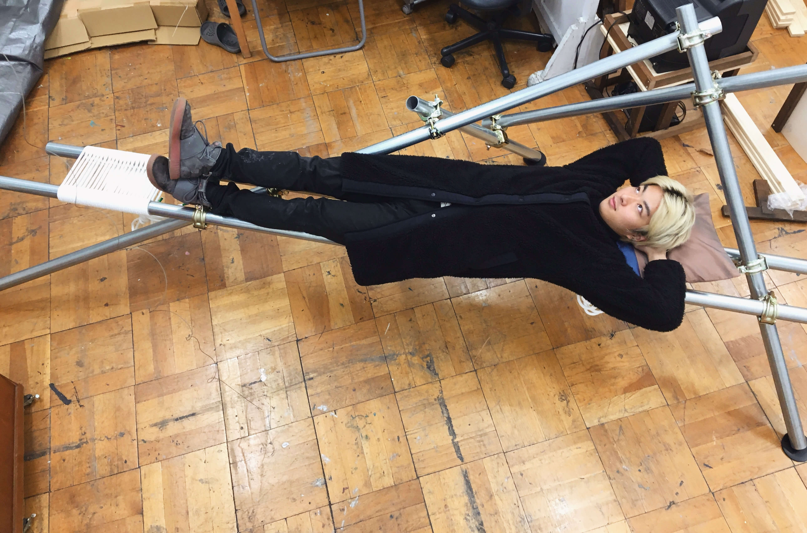
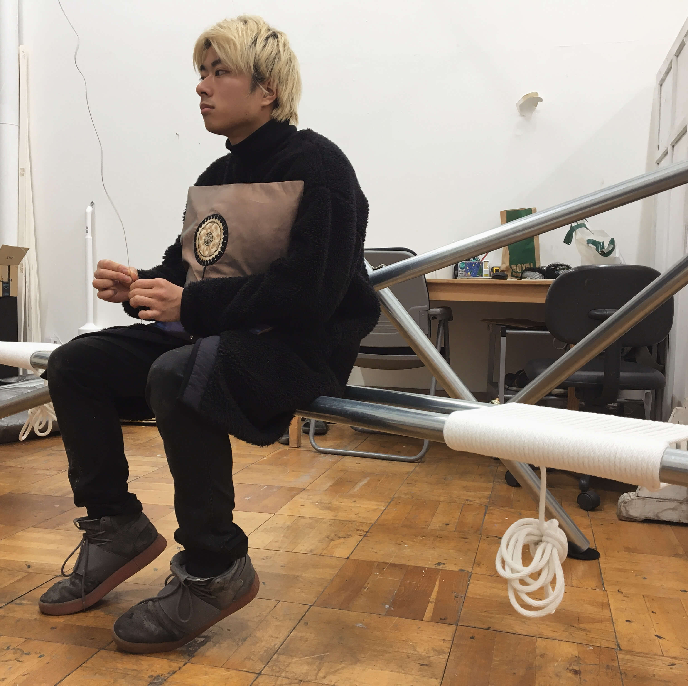
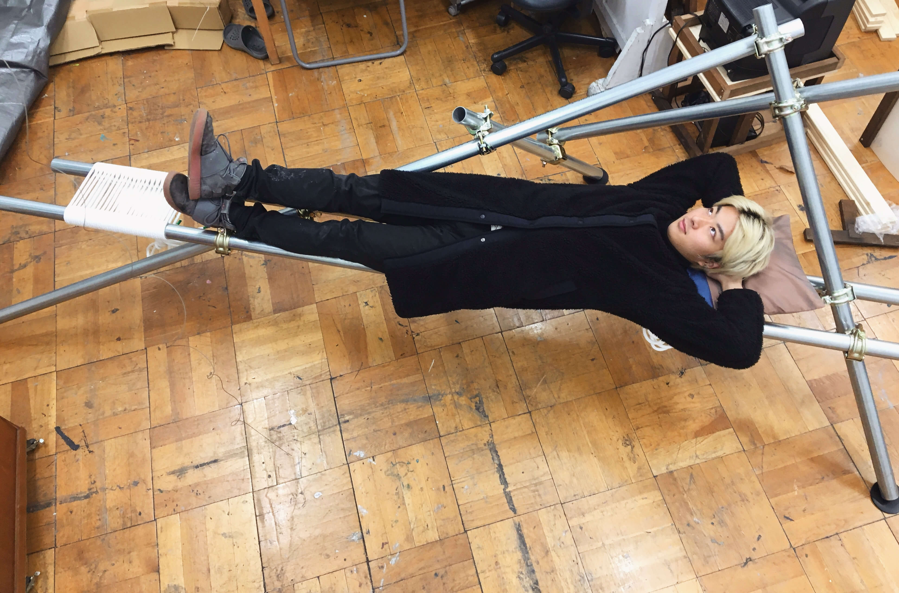

仮想現実の中で、あなたは複製された自分自身に遭遇します。
身体の分裂とそれを捉え直すことを経験した時に、身体は一体 誰のものになるでしょう?
2019年のわたしのVRとの出会いは、ついに一人称視点・身体までもが情報化・複製されるようになってしまった点において、喪失的な衝撃でした。わたしは学部3年から、様々なモノが情報化されてきたことを受けてデータと身体の関係を探る作品制作を行ってきましたが、それには身体の唯一性が複製可能な情報に対して自分がこの世界で唯一の存在であることを担保しているという前提が必要でした。しかしそれももう確かさを失いつつあります。目に見えないモノ、手に触れられないモノに対する、身体的、肉体的なものという対照構図がいよいよ危うくなり、自分の存在が揺らいでいることを感じます。
本作では身体とのそういったある種の別れ(あるいは出会い)の瞬間をVRの体験で描きました。仮想現実のもとで分裂してしまった自身と再融合するまでの、身体を通した体験によって、身体の在り方、そして未来の身体像について問いかけます。


 





Is your body yours?
Yuto Hayashi
exhibited in graduation exhibition of TUA in 2020
VR installation
device : Oculus quest
game engine : unity
installation material : single pipes, rope, plastic, cloth
exhibited in graduation exhibition of TUA in 2020
VR installation
device : Oculus quest
game engine : unity
installation material : single pipes, rope, plastic, cloth
demo movie
-
In this VR artwork, you sense your represented body. After you experience the representation of you and
comprehend it, whose
body does it become?
In 2019, I met VR. It was a shocking loss in the sense that the human body as well as the first-person view is forced to be replaced with data at last. I have been acting to comprehend the relationship between datas and body from interest in information society, but it was based on the uniqueness of the body which has been ensuring that the person's unique existance on the world. It is going over. The boundery between metaphysical things and physical things. In this VR artwork, I show this kind of farewell (or encount). Through the experience of representation of the body and refusion it, I ask the existance of the body and the body in the future.
In 2019, I met VR. It was a shocking loss in the sense that the human body as well as the first-person view is forced to be replaced with data at last. I have been acting to comprehend the relationship between datas and body from interest in information society, but it was based on the uniqueness of the body which has been ensuring that the person's unique existance on the world. It is going over. The boundery between metaphysical things and physical things. In this VR artwork, I show this kind of farewell (or encount). Through the experience of representation of the body and refusion it, I ask the existance of the body and the body in the future.